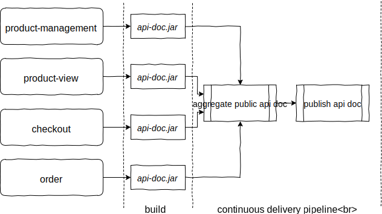

<!doctype html>
<html lang="en">
    <head>
        <meta charset="utf-8">
        <meta name="viewport" content="width=device-width, initial-scale=1.0, maximum-scale=1.0, user-scalable=no">

        <title>RESTful API documentation with Spring REST Docs and RAML</title>
        <link rel="stylesheet" href="./css/reveal.css">
        <link rel="stylesheet" href="./css/theme/white.css" id="theme">
        <link rel="stylesheet" href="./css/highlight/github.css">
        <link rel="stylesheet" href="./css/print/paper.css" type="text/css" media="print">
          <link rel="stylesheet" href="./assets/mywhite.css">
          <link rel="stylesheet" href="./assets/fa/css/fontawesome-all.min.css">


    </head>
    <body>

        <div class="reveal">
            <div class="slides"><section  data-markdown><script type="text/template">

<!-- .slide: data-background="assets/title.png" -->
</script></section><section  data-markdown><script type="text/template">
<!-- .slide: data-background="assets/epages.png" -->
</script></section><section  data-markdown><script type="text/template">
## Why Spring REST Docs?

- Takes a test-driven approach which guarantees accuracy <!-- .element: class="fragment" -->
- Uses Asciidoctor by default <!-- .element: class="fragment" -->
- Works with Spring MVC Test <!-- .element: class="fragment" -->
</script></section><section  data-markdown><script type="text/template">
<!-- .slide: data-background="assets/live-coding.jpeg" -->
## Spring REST Docs demo <!-- .element: style="color: white;" -->
</script></section><section  data-markdown><script type="text/template">
<!-- .slide: data-background="assets/towards-public-api-doc.jpg" -->
## Towards a public API documentation <!-- .element: style="color: white;" -->

<aside class="notes"><ul>
<li>different challenges</li>
<li>bring tech writers in</li>
</ul>
</aside></script></section><section  data-markdown><script type="text/template">
## Bring tech writers in

- Tech writers should not have to edit descriptions in tests


```java
.andDo(document("product-get", 
  responseFields(
    fieldWithPath("name")
      .description("The name of the product."),
    fieldWithPath("price")
      .description("The price of the product.")
   )
 ));
```

<aside class="notes"><ul>
<li>Use externalized descriptors.</li>
</ul>
</aside></script></section><section  data-markdown><script type="text/template">
### Externalize descriptors

```java
.andDo(document("cart-create-payment",
  requestFields(
    fieldWithPath("returnUri", "createPayment.returnUri"),
    fieldWithPath("cancelUri", "createPayment.cancelUri")),
  responseFields(
    fieldWithPath("approvalUri", "createPayment.approvalUri"))));
```

```yaml
createPayment.returnUri:
  description: The redirect URI after successful payment authorization.
createPayment.cancelUri:
  description: The redirect URI if the payment authorization was not successful.
createPayment.approvalUri:
  description: The URI used to approve the payment. The client has to redirect to this URI to initiate the approval.
```
</script></section><section  data-markdown><script type="text/template">
### Consistent test data

- In documenting tests, we use a test data catalog defined by TechWriting
</script></section><section  data-markdown><script type="text/template">
## Aggregate documentation

- One repository that composes all public documentation from the relevant microservices

<aside class="notes"><ul>
<li>each service emits documentation</li>
<li>how can we aggregate this into a single consistent api documentation which is always up-to-date</li>
</ul>
</aside></script></section><section  data-markdown><script type="text/template">
## Aggregate documentation



<aside class="notes"><ul>
<li>on master build emit a separate jar containing snippets and hand-written documentation from each service</li>
<li>aggregate the jars relevant for public api doc in the cdp</li>
<li>for asciidoc there is an enclosing assiidoctor file referencing parts from the jar</li>
<li>publish api doc</li>
</ul>
</aside></script></section><section  data-markdown><script type="text/template">
<!-- .slide: data-background="assets/achievements.jpg" -->
## First achievements <!-- .element: style="color:white;" -->
</script></section><section  data-markdown><script type="text/template">
## First achievements

- [Static API documentation](http://docs.beyondshop.cloud/) available on our [developer portal](https://developer.epages.com)
- Good starting point to work with partners
</script></section><section  data-markdown><script type="text/template">
<!-- .slide: data-background="assets/more.jpg" -->
## We want to go further <!-- .element: style="color:white;" -->

<aside class="notes"><ul>
<li>We need to add use case based documentation</li>
<li>API docs should be a nice appetizer to start using our product</li>
<li>We cannot achieve this with a static documentation</li>
<li>We need to go <strong>interactive</strong>!</li>
</ul>
</aside></script></section><section  data-markdown><script type="text/template">
## A machine readable API description?

- AsciiDoc as a markup language is hard to process <!-- .element: class="fragment" -->
- It is hard to get any further than static HTML <!-- .element: class="fragment" -->
- A machine readable format is what we need <!-- .element: class="fragment" -->
</script></section><section  data-markdown><script type="text/template">
<!-- .slide: data-background="assets/raml.png" -->
</script></section><section  data-markdown><script type="text/template">
## RAML by example

```yaml
#%RAML 1.0
title: Hello world # required title

/greeting: # optional resource
  get: # HTTP method declaration
    responses: # declare a response
      200: # HTTP status code
        body: # declare content of response
          application/json: # media type
            # structural definition of a response (schema or type)
            type: object
            properties:
              message: string
            example: # example how a response looks like
              message: "Hello world"
```
</script></section><section  data-markdown><script type="text/template">
## Introducing restdocs-raml

We built [`restdocs-raml`](https://github.com/ePages-de/restdocs-raml)
- To keep the benefits of Spring REST Docs
- To get a RAML description of our API
</script></section><section  data-markdown><script type="text/template">
<!-- .slide: data-background="assets/restdocs-raml-repo.png" style="align:top" -->
</script></section><section  data-markdown><script type="text/template">
<!-- .slide: data-background="assets/live-coding.jpeg" -->
## restdocs-raml demo <!-- .element: style="color: white;" -->
</script></section><section  data-markdown><script type="text/template">
## Conclusion

- Adding restdocs-raml to an existing project is easy <!-- .element: class="fragment" -->
- A RAML representation of an API opens a lot of new possibilities <!-- .element: class="fragment" -->
- Leverage the tools available in the RAML ecosystem <!-- .element: class="fragment" -->
</script></section><section  data-markdown><script type="text/template">
## Reference

<i class="fab fa-github"></i> Slides<br />
https://mduesterhoeft.github.io/spring-restdocs-raml-talk

<i class="fab fa-github"></i> Sample project<br />
https://github.com/mduesterhoeft/spring-restdocs-raml-talk

<i class="fab fa-github"></i> restdocs-raml<br />
https://github.com/ePages-de/restdocs-raml

</script></section><section  data-markdown><script type="text/template">
## Thanks for your attention

Questions?

<i class="fab fa-twitter"></i><a href="https://twitter.com/zaddo"> @zaddo</a>

<i class="fab fa-twitter"></i><a href="https://twitter.com/epagesdevs"> @epagesdevs</a>

<i class="fab fa-gitter"></i><a href="https://twitter.com/epagesdevs"> https://gitter.im/restdocs-raml/restdocs-raml</a>
</script></section></div>
        </div>

        <script src="./lib/js/head.min.js"></script>
        <script src="./js/reveal.js"></script>

        <script>
            function extend() {
              var target = {};
              for (var i = 0; i < arguments.length; i++) {
                var source = arguments[i];
                for (var key in source) {
                  if (source.hasOwnProperty(key)) {
                    target[key] = source[key];
                  }
                }
              }
              return target;
            }

            // Optional libraries used to extend on reveal.js
            var deps = [
              { src: './lib/js/classList.js', condition: function() { return !document.body.classList; } },
              { src: './plugin/markdown/marked.js', condition: function() { return !!document.querySelector('[data-markdown]'); } },
              { src: './plugin/markdown/markdown.js', condition: function() { return !!document.querySelector('[data-markdown]'); } },
              { src: './plugin/highlight/highlight.js', async: true, callback: function() { hljs.initHighlightingOnLoad(); } },
              { src: './plugin/zoom-js/zoom.js', async: true },
              { src: './plugin/notes/notes.js', async: true },
              { src: './plugin/math/math.js', async: true }
            ];

            // default options to init reveal.js
            var defaultOptions = {
              controls: true,
              progress: true,
              history: true,
              center: true,
              transition: 'default', // none/fade/slide/convex/concave/zoom
              dependencies: deps
            };

            // options from URL query string
            var queryOptions = Reveal.getQueryHash() || {};

            var options = {"transition":"fade"};
            options = extend(defaultOptions, options, queryOptions);
        </script>


        <script>
            Reveal.initialize(options);
        </script>
    </body>
</html>
